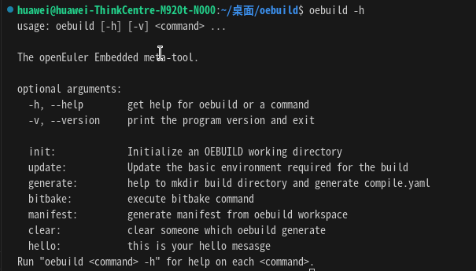
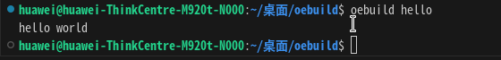

开发者指南¶
该章节用于介绍开发者如何在oebuild上进行开发命令插件。整个oebuild的设计模式采用了对象创建型模式，主体框架已经开发完毕，因此开发者仅需要实现命令插件即可。
oebuild是用python3开发的，因此在做开发工作前请先安装好python3相关的语言环境，并安装好pip3命令。在这里对python3与pip3的安装不再做详细说明，请自行实现。
新命令插件的开发仅需要实现以下几步即可（以下以hello命令为范例进行讲解）：
将oebuild源码clone到本地，使用如下命令：
git clone https://gitee.com/openeuler/oebuild.git
将oebuild以开发模式安装到本地，使用如下命令：
# 进入oebuild目录
cd oebuild
# 以开发模式将oebuild安装到本地
pip3 install -e .
在plugins创建hello目录，使用如下命令：
mkdir -p src/oebuild/app/plugins/hello
复制plugins同目录下demo/demo.py到hello/hello.py，使用如下命令：
cd src/oebuild/app/plugins/hello
cp ../demo/demo.py hello.py
适配hello.py代码，demo.py代码如下：
import argparse
import textwrap
import logging
from oebuild.command import OebuildCommand
from oebuild.util import *
from oebuild.configure import Configure
logger = logging.getLogger()
class Demo(OebuildCommand):
def __init__(self):
self.configure = Configure()
super().__init__(
name='{}',
help='this is your help mesasge',
description=textwrap.dedent('''\
this is your description message
'''
))
def do_add_parser(self, parser_adder) -> argparse.ArgumentParser:
parser = self._parser(
parser_adder,
usage='''
%(prog)s [-x xxx]
''')
return parser
def do_run(self, args: argparse.Namespace, unknown = None):
args = args.parse_args(unknown)
pass
将上述代码改为下述代码：
import argparse
import textwrap
import logging
from oebuild.command import OebuildCommand
from oebuild.util import *
from oebuild.configure import Configure
logger = logging.getLogger()
class Hello(OebuildCommand):
def __init__(self):
self.configure = Configure()
super().__init__(
'hello',
'this is your hello mesasge',
textwrap.dedent('''\
this is hello description
'''
))
def do_add_parser(self, parser_adder) -> argparse.ArgumentParser:
parser = self._parser(
parser_adder,
usage='''
%(prog)s [-x xxx]
''')
return parser
def do_run(self, args: argparse.Namespace, unknown = None):
args = args.parse_args(unknown)
# this is your function code
print("hello world")
Note
oebuild中对于二级参数使用了argparse命令解析类，对于二级命令参数的添加请详细了解 https://docs.python.org/zh-cn/3.10/howto/argparse.html 。
将hello命令加入命令插件文件，将如下hello插件参数添加到 src/oebuild/app/conf/plugins.yaml ：
- name: hello
class: Hello
path: plugins/hello/hello.py
运行hello命令，使用如下命令：
oebuild hello
查看oebuild帮助命令：
oebuild -h
如下图所示：
可以看到，oebuild已经出现了hello命令。
在执行 oebuild hello 命令后如下图所示：
在这里真实要实现的功能代码在do_run函数中。